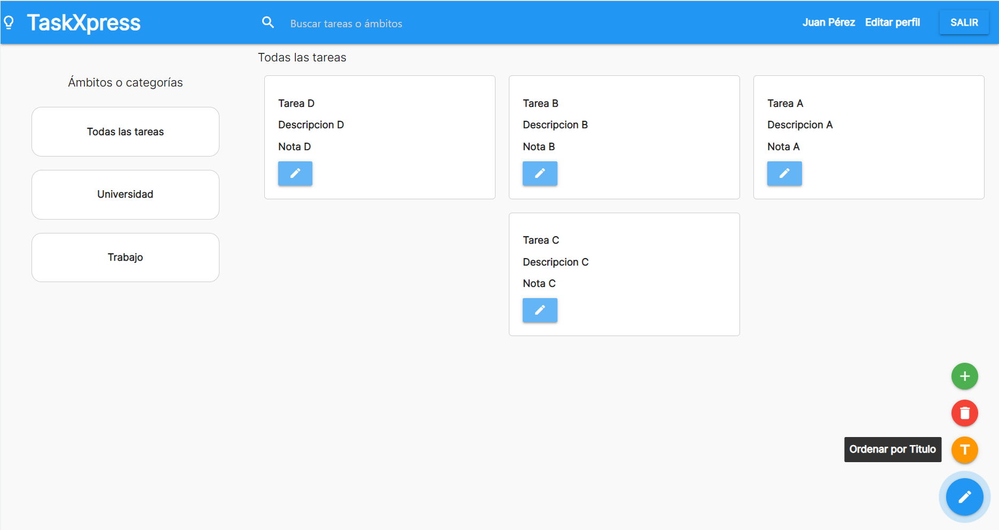

Simplifica tus ideas
Crea notas fácilmente
Eliminar notas cuando hayas completado dicha tarea
Organiza tus notas por ámbtos
Organizar tus tareas nunca ha sido tan fácil
Si prioriza la estética en todo lo que haces, con TaskXpress tendrás la posibilidad de organizar tus tareas por orden alfabético.

¡Personaliza tus notas!
A través de una amplia gama de selección de colores puedes personalizar el color de tus notas